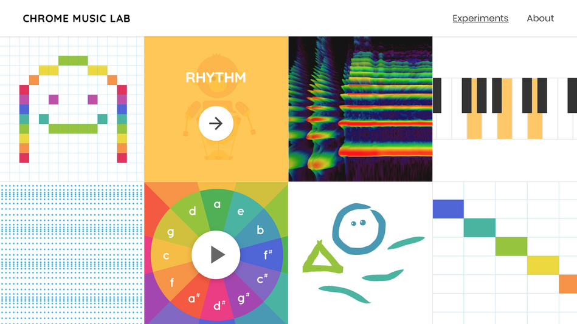

This project is a website that allows people from all over the world to build lego blocks on the map freely as whatever their designs look like. Although now it has been closed for adding more buildings, we can still see the projects that other people build on the website. The interface is pretty simple; it starts with a main page with a title “Explore All Builds” and invites user to click and explore for more. After clicking, user can explore all the buildings on the map. Besides seeing all the buildings directly from the map, users can also click on the bottom part to explore.
The interaction is also very intuitive. User only need to explore on the map and click on the design that interests them. Different design types are also put in different categories: 2D, Characters, Random, Buildings, Vehicles.
It is really fun to be able to explore all other people’s work online, especially when they are in such an interesting form: Lego. Through those design, we can see the creators’ interests and hobbies, their culture background, and so on. One of the problem of this project is that it can only hold a certain amount of buildings in a map, so I suppose it is also the reason that it is closed for adding now. It would be better if the user can keep updating and creating new exciting projects.
It is really fun to be able to explore all other people’s work online, especially when they are in such an interesting form: Lego. Through those design, we can see the creators’ interests and hobbies, their culture background, and so on. One of the problem of this project is that it can only hold a certain amount of buildings in a map, so I suppose it is also the reason that it is closed for adding now. It would be better if the user can keep updating and creating new exciting projects.
The design is very clean, including all the graphic design in the website. All the small projects are fun to operate. I spend a lot of time exploring it and honestly it is really interesting to play with. And I need to admit that I learned a lot through playing with these projects. The design of the website is absolutely beautiful, and the idea behind the website is also very helpful. It helps the user to explore, learn in a interesting way.